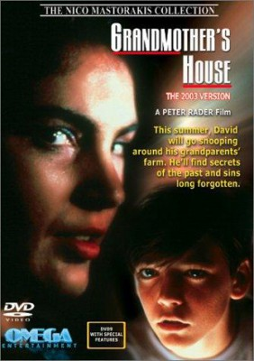

#9646 Der Tod kommt zweimal
Alternativ: Body Double

 IMDB-Wertung: 6.8 / 10
IMDB-Wertung: 6.8 / 10  Metascore: 0
Metascore: 0 
Der Schauspieler Jake beobachtet im gegenüberliegenden Haus einen Mord an einer hübschen Frau. Schockiert macht er sich daran, den Fall aufzuklären und findet sich schnell mitten in der Pornoindustrie Hollywoods wieder, wo er auf einmal zum Gejagten wird. Mit Craig Wasson und Melanie Griffith in den Hauptrollen.
Jahr: 1984
Dauer: 114 Minuten
FSK: 18
Land: USA Studio: Columbia Pictures CorporationTonspuren: DD2.0 - ,
Untertitel:
Auflösung: 1080p (1920x1040) Größe: 8960 MB
Genre: Thriller, Mystery
Regisseur:  Brian De Palma
Brian De Palma
Drehbuch: Robert J. Avrech, Brian De Palma, Brian De Palma
Soundtrack: Pino Donaggio
Darsteller:
 Craig Wasson als Jake Scully
Craig Wasson als Jake Scully Gregg Henry als Sam Bouchard
Gregg Henry als Sam Bouchard Melanie Griffith als Holly Body
Melanie Griffith als Holly Body- Deborah Shelton als Gloria Revelle
 Guy Boyd als Det. Jim McLean
Guy Boyd als Det. Jim McLean Dennis Franz als Rubin the Director
Dennis Franz als Rubin the Director- Al Israel als Corso the Director
- Lane Davies als Billy
 Barbara Crampton als Carol
Barbara Crampton als Carol- Larry Flash Jenkins als Assistant Director
- Mindi Miller als Tina
- Jerry Brutsche als Police Officer
 Rob Paulsen als Cameraman
Rob Paulsen als Cameraman- Jeremy Lawrence als Theater Director
- Rod Loomis als TV Director
- Cara Lott als Girl #2 in Bathroom
-  Brinke Stevens als Girl #3 in Bathroom
- Patty Lotz als Girl #1 in 'Holly Does Hollywood'
- David Ursin als Man #1 in 'Holly Does Hollywood'
 Casey Sander als Man #2 in 'Holly Does Hollywood'
Casey Sander als Man #2 in 'Holly Does Hollywood' Steven Bauer als Assistant Director in 'Holly Does Hollywood' (uncredited)
Steven Bauer als Assistant Director in 'Holly Does Hollywood' (uncredited)- Janette Caldwell als (uncredited)
- Darcy DeMoss als Barefoot Dancer in Nightclub (uncredited)
- Annette Haven als Gloria Swanson / 'Norma Desmond' (uncredited)
- Holly Johnson als Singing Nightclub Doorman (uncredited)
- David Haskell als Will the Drama Teacher
- Rebecca Stanley als Kimberly Hess
- Douglas Warhit als Video Salesman
- B.J. Jones als Douglas
- Russ Marin als Frank
- Monte Landis als Sid Goldberg
- Linda Shaw als Linda Shaw
- Denise Loveday als Vampire Movie Actress
- Gela Nash als Corso's Secretary
- Ray Hassett als Police Officer
- Rick Gunderson als Police Officer
- Michael Kearns als Male Porno Star
- Gary F. Griffith als Auditioning Actor
- Michael White als Security Guard at Gloria's House
- Emmett Brown als Studio Guard
- H. David Fletcher als Security Guard at Bellini's
- Marcia del Mar als Production Assistant
- Phil Redrow als Naked Man
- Slavitza Jovan als Saleslady
- Jack Mayhall als Jake's Replacement
- Lindsay Freeman als Girl #1 in Bathroom
- Melanie Scott als Girl #4 in Bathroom
- Barbara Peckinpaugh als Girl #2 in 'Holly Does Hollywood'
- Wes Edwards als Man #3 in 'Holly Does Hollywood'
- Chuck Waters als Jogger
Datei: X:\FSK18-1900-1999\Tod kommt zweimal, Der (1984, FSK18, 1920x1040).mkv seit 01.10.2018
Festplatte: FSK18
 Es gibt insgesamt 108 Filme in der Gruppe 'FSK18-1900-1999'
Es gibt insgesamt 108 Filme in der Gruppe 'FSK18-1900-1999'